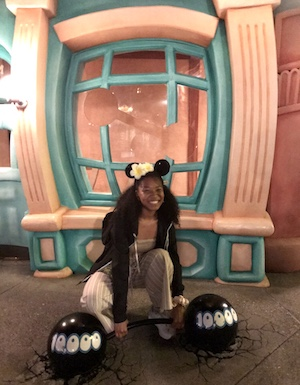
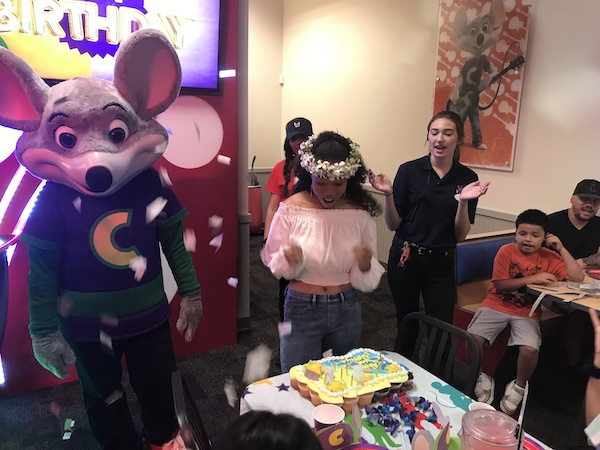
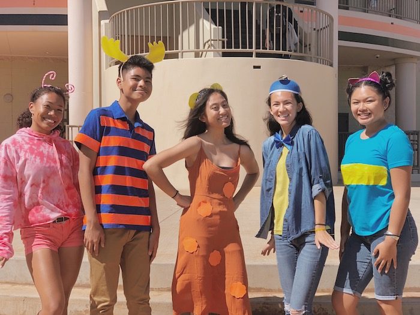

More
Mónika's Top 5 Epic Gamer Moments
Here are some of my favorite memories and achievements!
5 - Broke the Women's Deadlifting Record (Not Clickbait)
After years of great training, I became the first woman to make the impossible... possible. Check out these guns, they're unreal.

4 - Had Sweet 16th Birthday Party at Chuck E. Cheese's
What originally started as a joke ended up a reality. Though it was a bit later than expected, I finally got the Chuck E. Cheese's birthday experience I begged my parents for.

3 - Cat Cafe
Was super happy to hear that a cat cafe opened in Honolulu. Even more overjoyed to have spent an hour with such cute cats. Then, very regretful as I realized I was allergic to cats.

2 - Backyardigans Group Halloween Costume with Friends
In my opinion, the greatest group costume of the year. A lot of fun went into this idea!

1 - Went Viral on Twitter
Tiktok had been one of my obessions, and I reposted this video of me jumping to 'Prissy Pamper' on my twitter. What was entirely meant to be a dumb video for my friends ended up reaching a lot more people than I anticipated lol. My video in the end got about 1.9 million views. Still can't believe it. It's unfortunate to have went famous looking like... that.